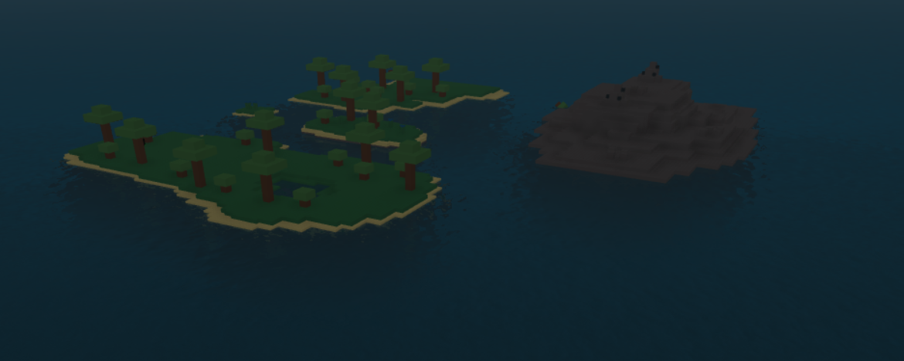

From here you can:
Flax island is a starter island in the middle of the map, Containing one of the most important
resources in the game.
Flax island contains Small trees, Bushes, Flax flowers, Small stones, And a single vein of coal
These resources make this a great starter island but you probably shouldnt settle there
because there is a spawn and it is often visited.
Spawn:Yes
Water:Small pond
Rocks and ores:Small stones and Coal
Animals:None
Plants:Flax flowers, Trees and bushes.
You should probably set up a food source, Usually I'll fish for my food but you can also plant things
There is a water source but do not drink directly from it, Just use a bucket
It is often visited by others so if you decide to settle there make sure you can protect yourself